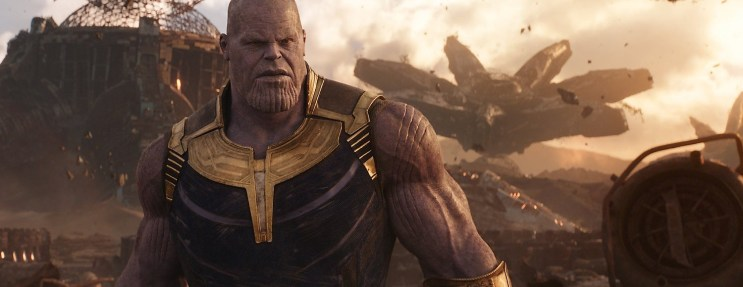
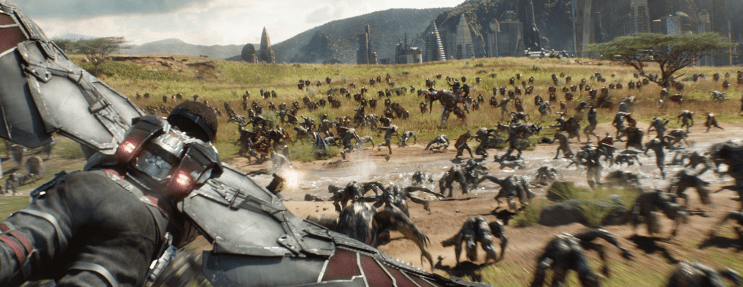

Marvel tenía un plan. Diez años. Diez años de duro trabajo que ahora desembocan en este gigantesco fin de fiesta. Diez años de movimientos inteligentes. De hacer las cosas bien. De afianzar este vasto universo cinematográfico. Guste más o menos, estamos ante un hito que ha cambiado la forma de entender el cine de entretenimiento. Un auténtico fenómeno cultural que será estudiado en el futuro. Al seguidor sólo le queda rendirse a la fórmula y disfrutar.
Vengadores: Infinity War llevaba la marca de la primera entrega del supergrupo desde el minuto uno: las dos fueron un movimiento clave y estratégico. La película de 2012 reventó la taquilla, emocionó a los fans, y catapultó a MCU hasta la estratosfera. El film de los Hermanos Russo lleva todas las papeletas para repetir fenómeno y reverdecer los laureles Vengadores después de una Era de Ultrón que desde su mismo estreno ha causado división de opiniones.
Como ya hemos dicho, si por algo se caracteriza este universo (por normal general) es por tomar decisiones inteligentes y coherentes. El paso más lógico era dejar esta nueva criatura en manos de Anthony y Joe Russo. Unos realizadores enérgicos, que en la franquicia de Capitán América supieron jugar a la perfección con la pirotecnia y el espectáculo que se le suponen a blockbusters de estas características, pero que también nos presentaron unas tramas más adultas y complejas. Unos personajes psicológicamente más definidos y con contradicciones morales.
La elección de estos directores no podía haber sido más acertada. La película es técnicamente apabullante. Su factura sencillamente exquisita. El ritmo, con un sencillo pero efectivo esquema de pelea-conversación-pelea-conversación, no llega a cansar al espectador, y sus más de 150 minutos se pasan volando. Tiene un montón de chistes, la mayoría bastante buenos, y la mayoría provenientes de los Guardianes de la galaxia, todos ellos escritos por James Gunn, responsable de la franquicia galáctica. Otra decisión acertada. Sin embargo a medida que nos vamos acercando al tercio final, las risas se apagan, y entra en juego la epicidad pura y dura. Hay muchos momentos, muchos gestos, muchas peleas, que están cargados de emotividad, y que a buen seguro van a emocionar al aficionado.
Uno de los mayores miedos que había hacia la película era la gran cantidad de superhéroes en pantalla. Y sí, es cierto que ante semejante festín de personajes, poco espacio hay para definirlos y dotarlos de estructura. Pero han pasado ya muchos años. Muchas películas. Los héroes están ya perfectamente definidos para el público. Son familia. Eso no quita que haya espacio para que algunos puedan lucirse, para mayor gloria de Thor o los ya mencionados Guardianes.
Antes de terminar es imposible no hablar del auténtico protagonista del que todo el mundo habla. El as en la manga del estudio para romper con esta película no es otro que un personaje que nos han sabido mostrar lo justo, han cocido a fuego lento su papel, nos han hecho esperar y han avivado al máximo el interés del público sobre su figura: Thanos. Titán loco. Destructor de mundos. Un personaje especialmente complejo y difícil de definir.